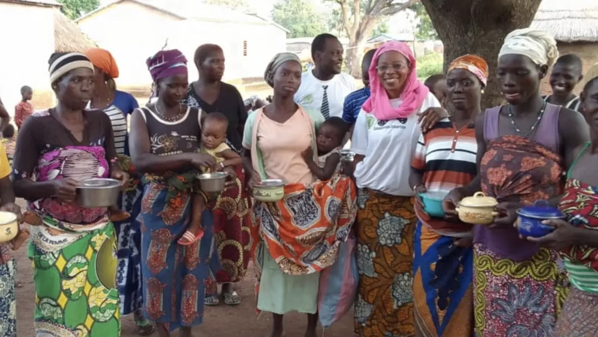

Graine de Baobab
Solidarité France Bénin
Depuis 2011, notre association humanitaire œuvre pour améliorer la vie des populations les plus vulnérables au nord du Bénin. Nous intervenons dans trois domaines principaux : l’éducation, la nutrition et le soutien à l’insertion professionnelle, tout en promouvant le tourisme solidaire. Notre mission : offrir des opportunités concrètes et durables aux communautés locales, particulièrement aux femmes, enfants et jeunes déscolarisés.

Actualités et événements
Restez informé de nos dernières nouvelles, événements à venir et opportunités de participation.
Témoignages
Lisez les témoignages de ceux qui ont bénéficié de nos programmes et de nos bénévoles.
Newsletter
Inscrivez-vous à notre newsletter pour recevoir les dernières nouvelles et mises à jour directement dans votre boîte mail.
Galerie photos
Explorez notre galerie de photos pour voir nos actions sur le terrain et l'impact de notre travail.